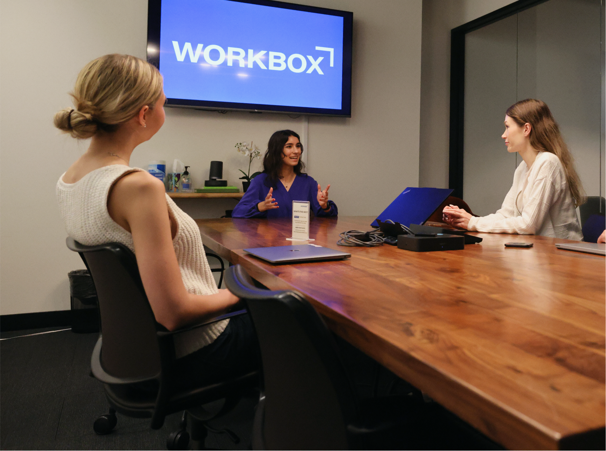
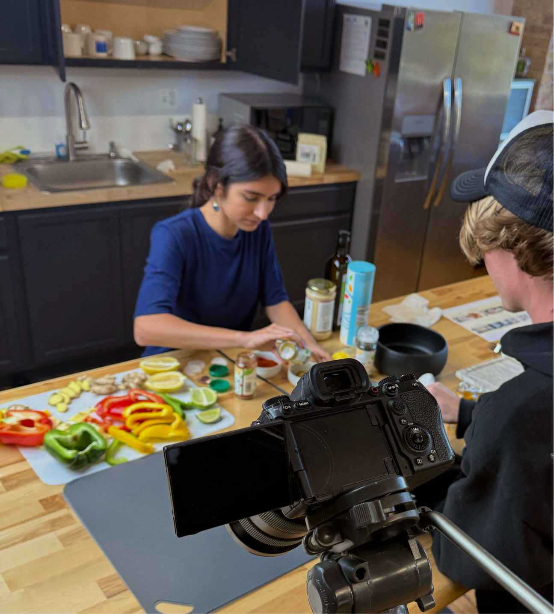
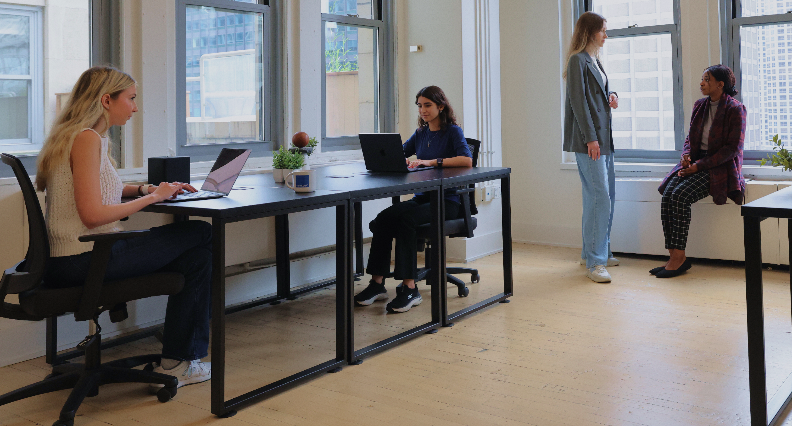

I design visuals meant to make people pause, not just scroll past. My work lives at the intersection of social media, motion, and visual design.
Always plugged into digital trends, I build graphics that go beyond surface-level and resonate visually, conceptually, and emotionally.
Beyond the screen, I spend my time figure drawing and saving inspiration across TikTok and Pinterest (habits I swear keep my creative instincts sharp).


